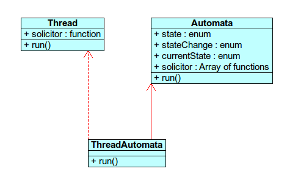

lluvia Project lesson
lluvia load log
Hilos autómatas
Con lluvia podemos crear hilos con funciones de autómatas. La diferencia de este tipo de objetos con los autómatas naturales es que estos son gestionados por processor. Cuando ejecutemos el método run de processor ejecturá el método run del objeto ThreadAutomata intanciado que podría ser simplemente una función que haga cambiar el estado de ese objeto.
INPUT TERMINAL
Your code:
function log(msg){
var book = document.getElementById("debug")
book.innerHTML = msg + "
\n" + book.innerHTML
}
solicitor = [
// State 0
[
function(){ // none up
log("I'm going to lay down")
},
function(){ // none steady
log("ZZZ")
},
function(){ //none down
log("I'm getting up")
}
],
// State 1
[
function(){ // Walking.up
log("I'm going to put my shoes on.")
},
function(){ // I'm walking
log("1 step")
},
function(){ // Stop walking
log("I take my shoes off.")
}
],
// State 2
[
function(){ // Running.up
log("I'm going to put my sneakers on.")
},
function(){ // I'm walking
log("10 steps")
},
function(){ // Stop walking
log("I take my sneakers off.")
}
],
// State 3
[
function(){ // Swimming.up
log("I'm going to put my swimming trunk on.")
},
function(){ // I'm swimming
log("Now swimming.")
},
function(){ // Stop swimming
log("I take my trunk off.")
}
]
]
processor = new Processor()
david = new ThreadAutomata( {none:0, walking:1, running:2, swimming:3 }, solicitor)
processor.run()
function change_state(){
david.currentState.requested = (david.currentState.current + 1 ) % 3 + 1
}
setInterval(change_state, 2000)
run
stop
OUTPUT CONSOLE
#debugConclusión
Aquí vemos cómo el estado de "David" cambia según la gestión de processor cada n milisegundos automáticamente como si de un hilo simple se tratase.
Para que esta clase funcione perfectamente DEBE realizar operaciones lo más atómicas posibles.
Diagrama
Como podemos ver, la clase autómata hereda de la interfaz Thread y de la clase Automata. El método run ejecutará su función predefinida, y ,a petición (como en Automata), variará su estado.